📊 生存分析报告：电信客户流失预测
基于 Kaplan‑Meier、Cox 比例风险模型、AFT 模型与客户生命周期价值分析 | 周子衡
一、数据准备与探索性分析
1.1 数据集说明
使用 IBM Telco Customer Churn 数据集，原始数据 7,043 条，包含人口统计学、服务使用及流失状态等 21 个字段。
1.2 数据清洗与筛选
| 步骤 | 操作说明 |
|---|---|
| 标签转换 | 将 churnString (Yes/No) 转为数值型 churn (1=流失，0=未流失) |
| 合同类型筛选 | 只保留 Month-to-month（月付合同）客户 |
| 服务类型筛选 | 只保留使用互联网服务 (internetService != "No") 的客户 |
✅ 清洗结果：从 7,043 行 → 3,351 行（月付 + 互联网客户）。
1.3 清洗后数据概览
| customerID | gender | tenure | contract | internetService | churn |
|---|---|---|---|---|---|
| 7590-VHVEG | Female | 1.0 | Month-to-month | DSL | 0 |
| 3668-QPYBK | Male | 2.0 | Month-to-month | DSL | 1 |
| 9237-HQITU | Female | 2.0 | Month-to-month | Fiber optic | 1 |
| 9305-CDSKC | Female | 8.0 | Month-to-month | Fiber optic | 1 |
| 1452-KIOVK | Male | 22.0 | Month-to-month | Fiber optic | 0 |
1.4 生存关键变量统计
| 统计量 | tenure（月） | churn（流失标识） |
|---|---|---|
| 计数 | 3,351 | 3,351 |
| 均值 | 19.43 | 0.464 |
| 标准差 | 18.17 | 0.499 |
| 最小值 | 1.0 | 0 |
| 最大值 | 72.0 | 1 |
📌 关键发现：客户在网时长 1~72 个月，平均 19.4 个月；目标群体流失率高达 46.4%，具有高分析价值。
二、Kaplan‑Meier 生存分析
2.1 整体生存函数估计

图1：整体生存曲线（Kaplan-Meier估计）
中位生存时间：34.0 个月 —— 50% 的月付互联网客户会在 34 个月内流失。
2.2 分组生存分析
2.2.1 性别分组
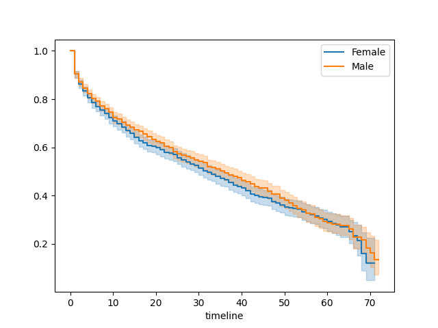
图2：性别分组生存曲线
Log-Rank 检验：p = 0.153 > 0.05，男性和女性无显著差异。
2.2.2 在线安全服务分组

图3：在线安全服务分组生存曲线
Log-Rank 检验：p < 0.001，使用在线安全服务的客户生存概率显著更高。
2.3 分类变量汇总（部分）
表🎯 KM 小结：整体中位生存时间 34 个月；增值服务（在线安全、备份、技术支持）是延长客户生命周期的最强影响因素。
三、Cox 比例风险模型
3.1 模型拟合结果
| 变量 | HR (风险比) | 95% CI | p值 | 解读 |
|---|---|---|---|---|
| dependents_Yes | 0.72 | (0.63, 0.83) | <0.005 | 风险降低 28% |
| internetService_DSL | 0.80 | (0.72, 0.90) | <0.005 | 风险降低 20% |
| onlineBackup_Yes | 0.46 | (0.41, 0.52) | <0.005 | 风险降低 54% |
| techSupport_Yes | 0.53 | (0.46, 0.61) | <0.005 | 风险降低 47% |
Concordance 指数：0.64（中等区分能力）

图4：Cox模型风险比森林图
3.2 比例风险假设检验
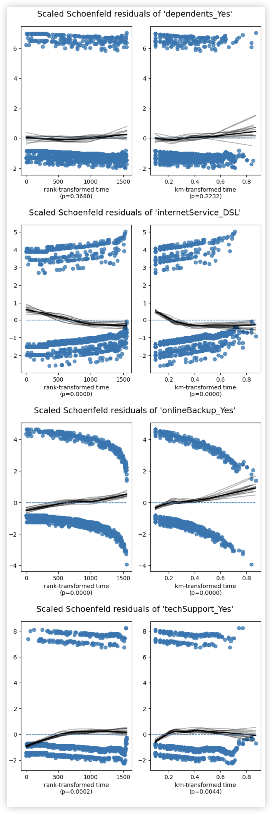
图5：Schoenfeld残差图
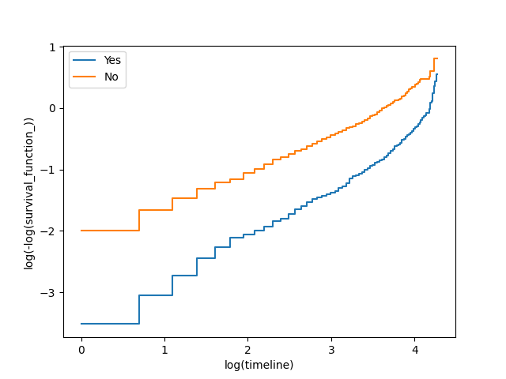
onlineBackup
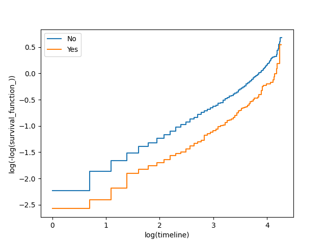
dependents
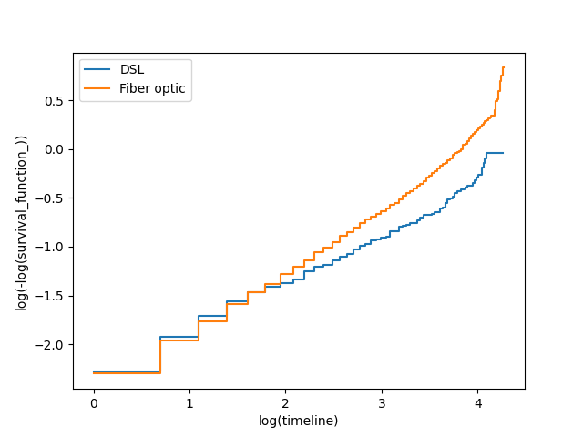
internetService
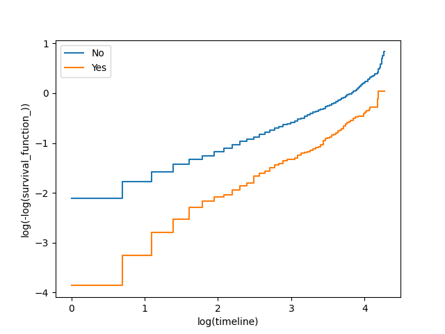
techSupport
internetService_DSL、onlineBackup_Yes、techSupport_Yes 违反比例风险假设（p<0.05），建议后续使用分层 Cox 或时间依协变量。
📌 业务启示：在线备份和技术支持是最强保护因素，HR 分别低至 0.46 和 0.53。
四、加速失效时间模型 (AFT)
4.1 模型拟合（Log‑Logistic 分布）
Concordance = 0.73（优于 Cox 的 0.64）

图6：AFT模型系数图
| 变量 | 加速因子 (exp(coef)) | 解读 |
|---|---|---|
| onlineSecurity_Yes | 2.37 | 生存时间延长 2.37 倍 |
| onlineBackup_Yes | 2.25 | 生存时间延长 2.25 倍 |
| paymentMethod_Credit card | 2.22 | 生存时间延长 2.22 倍 |
| techSupport_Yes | 1.99 | 生存时间延长 1.99 倍 |
| partner_Yes | 1.97 | 生存时间延长 1.97 倍 |
4.2 Log-Odds 图（模型假设检验）
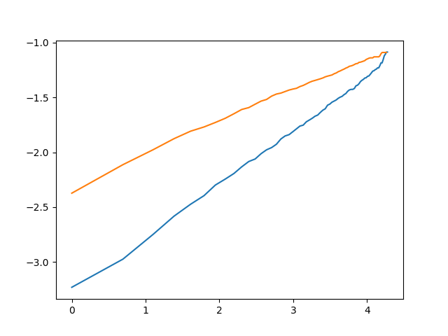
partner
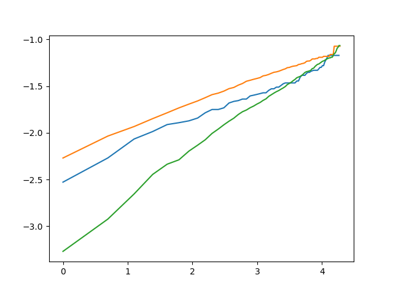
multipleLines
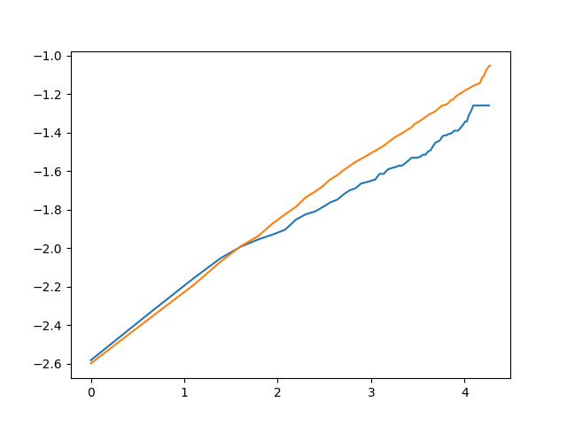
internetService
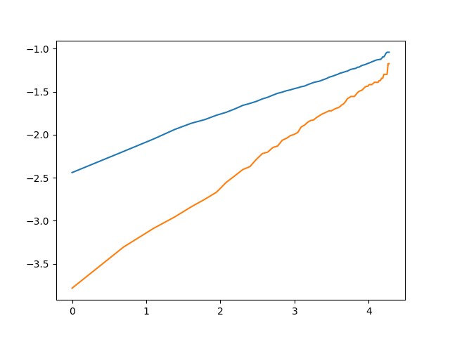
onlineSecurity
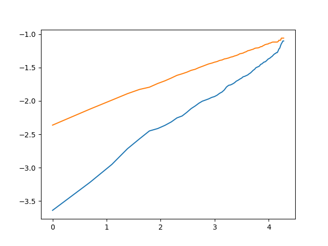
onlineBackup
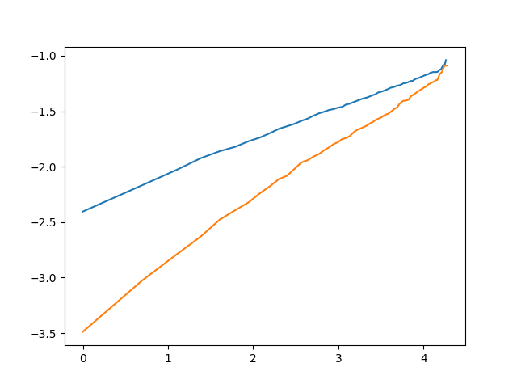
deviceProtection
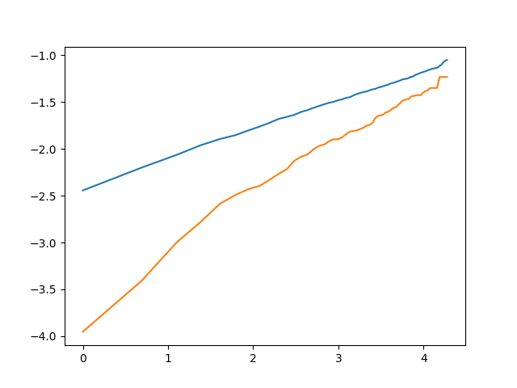
techSupport
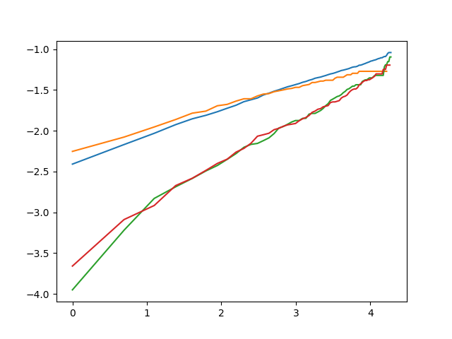
paymentMethod
⭐ AFT 核心结论：所有增值服务均为显著保护因素，在线安全与在线备份效果最突出；中位生存时间以 KM 估计的 34 个月为准，AFT 主要提供变量相对效应。
五、客户生命周期价值 (CLV) 分析
5.1 基准客户累计 NPV（月利润30元，折现率10%/年）
| 合同月份 | 生存概率 | 预期月利润(元) | 净现值(元) | 累计NPV(元) |
|---|---|---|---|---|
| 1 | 1.00 | 30.00 | 30.00 | 30.00 |
| 6 | 0.71 | 21.30 | 20.43 | 144.22 |
| 12 | 0.59 | 17.70 | 16.16 | 251.40 |
| 18 | 0.50 | 15.00 | 13.03 | 336.31 |
| 24 | 0.43 | 12.90 | 10.66 | 405.44 |

图7：投资回收期分析图
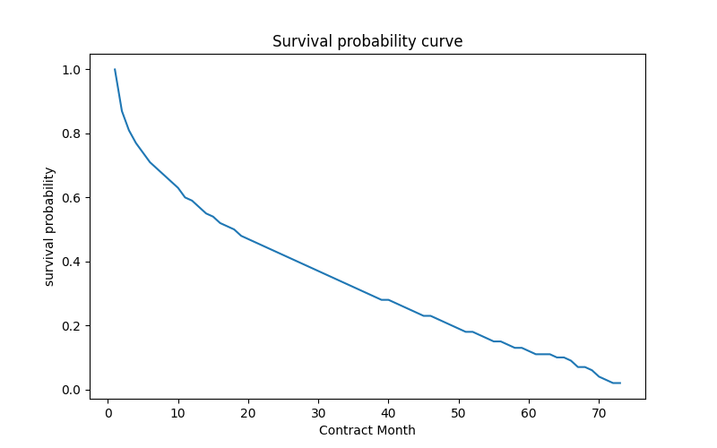
图8：基准客户生存概率曲线
5.2 投资回收期
假设客户获取成本 (CAC) 为 200 元，约 10‑11 个月可收回成本。12 个月 CLV 约为 251 元，建议 CAC 控制在 250 元以内以保障盈利。
💰 商业建议：优先向无家属、无增值服务的月付互联网客群推广在线安全和在线备份，可将 CLV 提升 2 倍以上，同时缩短回本周期。
📌 总结与业务策略
- ✅ 月付互联网客户流失集中在前 34 个月（中位生存时间），流失率高达 46%。
- ✅ 在线备份、在线安全、技术支持是最强的保护因素（HR 0.46~0.53，AFT 加速因子 2.25~2.37）。
- ✅ 有家属、有伴侣、DSL 用户的粘性更强；光纤用户及无家属群体是重点干预对象。
- ✅ CLV 模型显示：基准客户 12 个月价值 251 元，推广增值服务后可显著提高客户生命周期总价值。
📁 完整代码、图片及交互附录可在 GitHub 仓库查看 | 基于生存分析框架 (lifelines) 实现